圣诞节要来了，大虾为大家精心准备了大礼包，挑选出十部适合在圣诞节观看的佳作。
里面搭配了各种菜系，大家可以各取所爱，希望通过这些电影给大家带来温暖，同时让大家更加了解圣诞节和它的意义。
首先，圣诞节的主角是耶稣，大虾盘点了四部表现耶稣生平的高分电影。
1
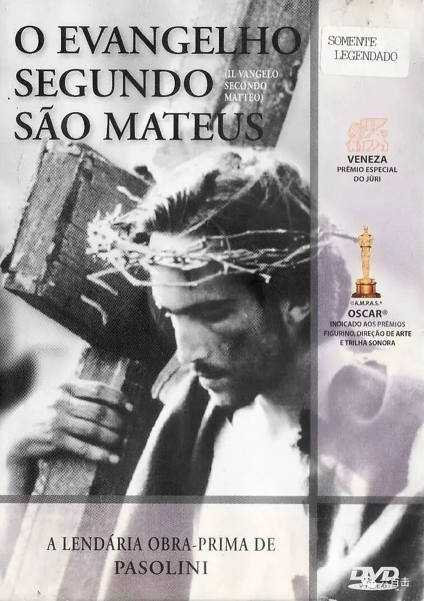
马太福音
vangelo secondo Matteo
导演：皮埃尔.保罗.帕索里尼/ Director：Elsa Morante
剧情137分钟 / Drama 137 min
1965年意大利国家影评人协会最佳摄影、最佳化妆和最佳导演奖
1964年威尼斯电影节评委会特别奖；
1968年芬兰国家电影奖最佳外语片导演奖
豆瓣评分8.5
皮埃尔.保罗.帕索里尼作为一个无神论艺术家，接受了当时教皇发起的与非基督教艺术家的对话活动。
在等待教皇的时候，他闲来无事，一口气看完了《马太福音》，产生了根据福音书拍一部电影的想法，于是就有了这部杰出作品。
帕索里尼没有采用剧本，而是直接根据福音书的原文一句一句的拍摄，最大程度上还原了福音书和耶稣的一生。
更加特别的是，这部电影的拍摄精神延续了意大利新现实主义运动的精神，讲解真实质朴，没有起用专业的演员去表演，而是让当地的农民、店主、工厂工人、卡车司机来扮演其中的角色，玛利亚也是由帕索里尼自己的母亲出演。
黑白摄影以及恰到好处的长镜头更加增添了本片的魅力，电影荣获当年威尼斯电影节评审团大奖，并在巴黎圣母院公开放映，不论是基督徒还是非基督徒，这部电影非常适合我们了解圣诞节主角耶稣的一生。
2
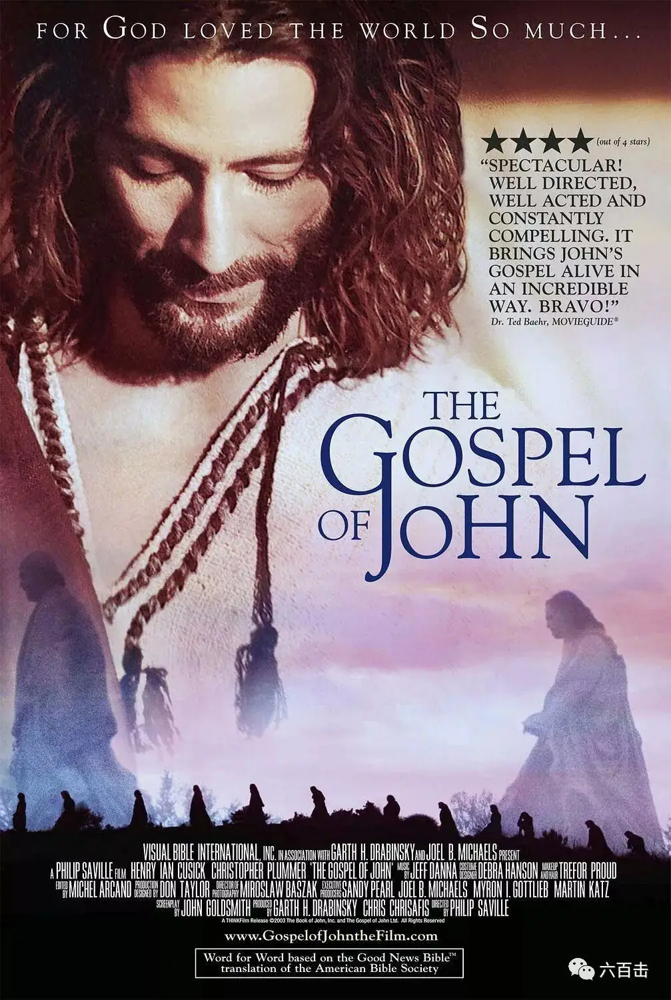
约翰福音
The Gospel of John
导演：Philip Sacille
剧情125分钟 / Drama 125 min
豆瓣评分8.7
本片根据《约翰福音》改编，制作团队非常强大，包揽了奥斯卡金像奖幕后班底，电影每一句对白、字幕完全依照圣经原文。
甚至制作人员率领多位著名圣经学者以及神学家组成顾问委员会仔细研究，每一个场景、出现的人物、建筑物、服侍一丝不苟，可以如实再现耶稣的故事。
3
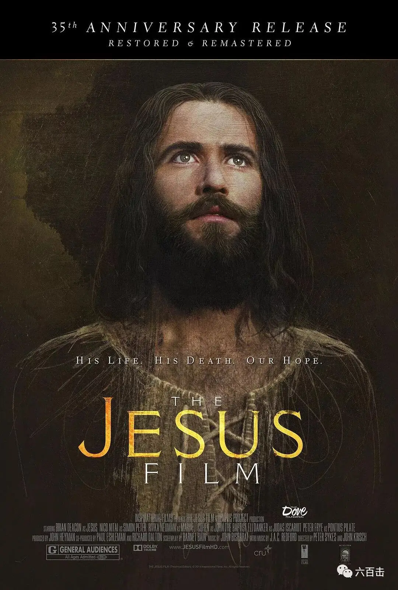
耶稣传
JESUS
导演：John Krish / Peter Sykes
剧情117分钟 / Drama 117 min
豆瓣评分8.6
再来一部根据《路加福音》改编的电影，此片被誉为最准确描述耶稣基督生平的影片。
本片一个很大的特色就是配音，《耶稣传》计划的目的是要世界上每一个人能够观看以他们本身的语言配音的电影，不论你是说中文、法文以及其他四百多种的语言，都可以通过自己的语言认识耶稣。
所以，本片应该是观影人数最多的耶稣生平电影，全球超过十亿人观赏过了这部杰出的作品。
4
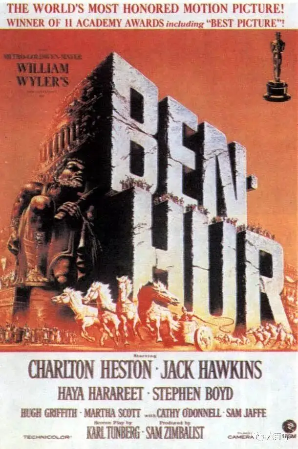
宾虚
Ben-Hur
导演：威廉.惠勒
剧情212分钟 / Drama 212 min
第32届奥斯卡除最佳剧本之外的11项大奖
豆瓣评分8.6
威廉.惠勒的巨作，横扫11项奥斯卡奖的经典史诗片，至今无人能破这项记录。
本片表面上是讲宾虚，实际上耶稣才是主角，电影开始于耶稣的诞生，结束于耶稣受死和复活，中间通过宾虚既增加了电影故事的紧张，更通过宾虚让我们更加了解和明白基督教教义及其精神。
除了扎实的剧作、饱满的故事、清晰的任务线条之外，电影布景、音乐、画面更是气势恢宏，实景拍摄的四轮马车追逐戏永载史册，电影每个画面如同油画一般，充满了古典魅力。
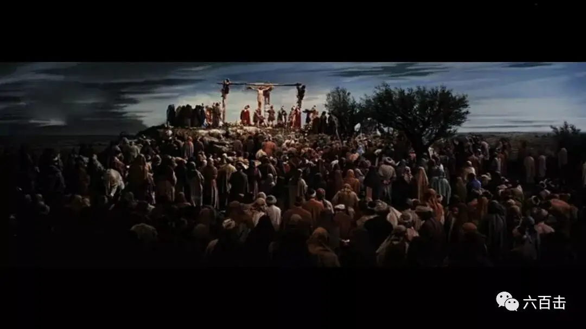
跌宕起伏的恢宏之后更是升腾出救赎的力量：爱比复仇更有力量。
而本片最为特别的一个地方就是，耶稣虽然是主角，却从未露面，但是我们又会很清楚的明白他在电影中又无处不在。
相信我，看完之后，你一定会被震撼。
通过上面四部，你可以很清楚的了解耶稣的生平，下面我们再来六部与圣诞节和信仰相关的佳作，电影涵盖喜剧、战争片、爱情片以及动画片。
5
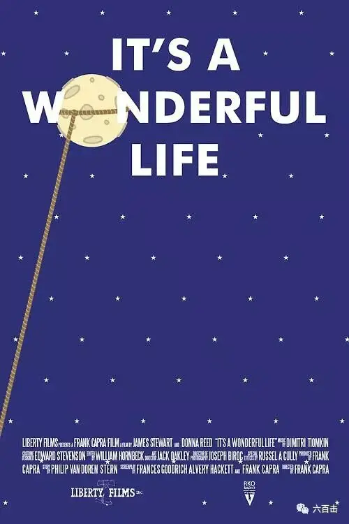
生活多美好
It's a Wonderful Life
导演：弗兰克·卡普拉
剧情130分钟 / Drama 130 min
第19届奥斯卡最佳影片、导演、男主角（提名）
豆瓣评分9.2
弗兰克.卡普拉是好莱坞电影大师，曾获奥斯卡终身成就奖，《生活多美好》是他重要代表作，豆瓣评分高达9.2。
电影讲述了主人公乔治在圣诞节前准备自杀，这时候上帝拯救了他，并让他了解到自己一生的使命——拯救那些不幸的人。电影充满了温情和对生命的尊重。
在2006年6月14日美国电影学会揭晓的“百年百部励志佳片”榜单中，本片位居榜首。
很多人将此片看做是电影史上最经典的圣诞片，“哭死”了无数人，感受一下：
豆瓣网友Q:看过之后无法用言语来表达，不管这励志的剧情是有多么俗套但他就是彻彻底底的打动了我。如果下次当你对自己彻底失望了的时候，当你的生活陷入困境的时候，当你的梦想不能付诸现实的时候，想想曾经有多少人因为你而获得过幸福和快乐。同时也祝你快乐，乔治。
豆瓣网友托尼.王大拿:最后五分钟，泪水肆意横流，内心却极端温暖。
豆瓣网友米粒:看得老泪纵横，不管这是个多俗多没创意的结果，最后温暖的圣诞真是太棒了！不管你失去了什么，有朋友有家人就是最大的财富啊！看看吧，没有你的世界，或许一样转，但一定会缺了你那一片光彩。George，圣诞快乐，还有你环游世界的梦想一定会实现。【最佳圣诞电影之首，纽约每年圣诞期间的影院常客】
6
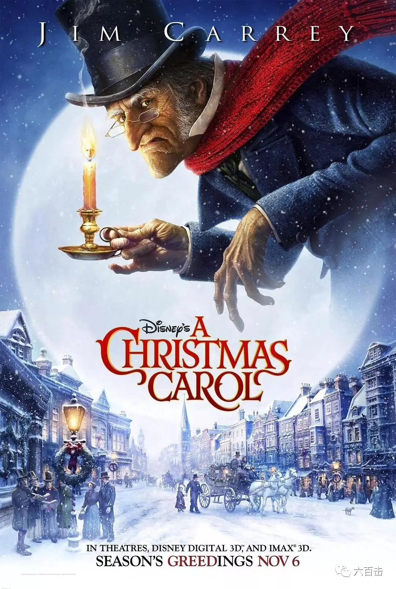
圣诞颂歌
A Christmas Caro
导演：罗伯特·泽米吉斯
剧情98分钟 / Drama 98 min
豆瓣评分7.3
这是一部迪士尼电影，导演是拍摄过《阿甘正传》和《回到未来》的罗伯特.泽米基斯。
电影改编自狄更斯的原作，讲述了冰冷的守财奴斯克鲁奇在圣诞节遭遇奇事，他遇到了三个精灵，分别是”过去之灵”、“现在之灵”和“未来之灵”.......
奥古斯丁曾说“唯有面对死亡之时，一个人的自我才真正诞生”。在这段神奇的旅程中，斯克鲁奇冰冷、苛刻又小气的心逐渐被融化，他可以去拥抱别人，去拥抱圣诞。
电影是3D版的“人物动作捕捉”技术的动画片，金.凯瑞一人分饰多角，不仅演了斯克鲁奇从童年到中年再到老年三个角色，还饰演了三个精灵，一个人演了六个角色，演技非常逆天。
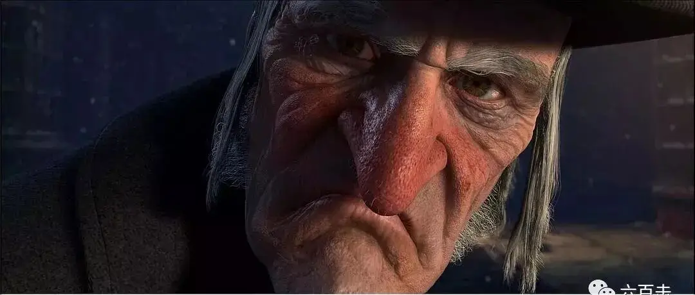
7
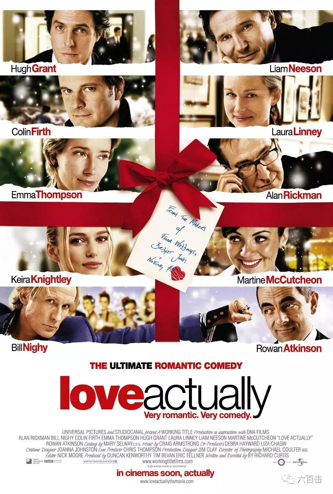
真爱至上
Love Actually
导演：理查德·柯蒂斯
剧情135分钟 / Drama 135 min
第57届英国电影学院 最佳英国影片（提名）最佳男配角
豆瓣评分8.5
圣诞节里，再推荐给大家一部温暖的电影，电影是由发生在圣诞节的10个爱情故事组成，这是一部你要留着眼泪从头笑到尾的电影。
而导演理查德.柯蒂斯能轻松驾驭十个故事，又能收获如此高的评价，功力自然不凡，扒了一下这个导演的资料，才发现他居然是《憨豆先生》和《时空恋旅人》的导演。
那大虾也就不吃惊了，喜剧、爱情、脑洞绝对是他的拿手好菜，如果大家有兴趣，也可以看一下他另一部由憨豆先生主演的《黑爵士之圣诞颂歌》，没错，也是以狄更斯小说改编的电影，体验一下画风吧。
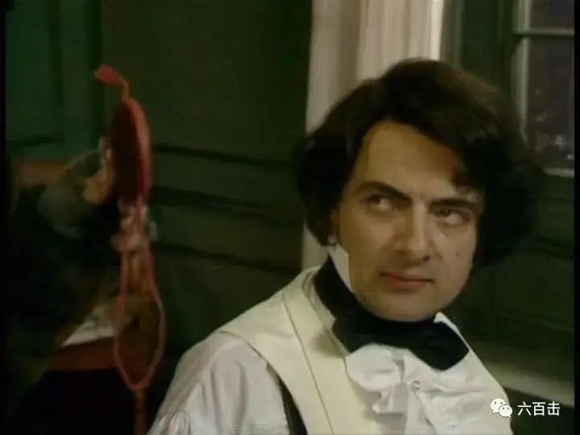
不过不要小瞧这部电影，豆瓣评分8.7….
8
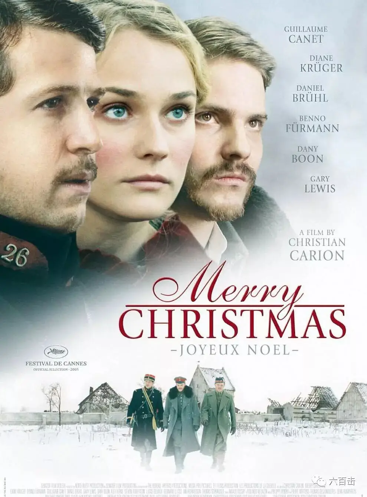
圣诞快乐
Joyeux Noël
导演：克里斯蒂安·卡西雍
剧情116分钟 / Drama 116 min
第78届奥斯卡金像奖最佳外语片提名
2006年第63届金球奖电影类-最佳外语片提名
2006年第31届恺撒奖最佳影片提名
豆瓣评分8.4
影片根据1914年圣诞节前夕发生的真实故事改编而成，第一次世界大战期间，战事胶着而残酷，不同阶层的人不断的卷入到战争的漩涡之中，徘徊在死亡的边缘。
终于，平安夜来临。德国、法国和苏格兰军营宣布在圣诞之夜停战，相互约定度过一个和平安详的圣诞节。每个人都放下了手中的武器，手执蜡烛，互道“圣诞快乐”。
应征入伍的德国男高音歌手斯普林克（本诺·福尔曼 Benno Fuehrmann饰）的女友安娜（黛安·克鲁格 Diane Kruger饰）在平安夜来看望他。
士兵们被安娜柔美天籁的声音所深深温暖，苏格兰牧师（卡瑞·刘易斯 Gary Lewis饰）也吹响了风笛，划过寂静寒冷的雪夜，久久飘荡在战场上空。
那个血腥恐怖的时代，“一天的和平”可以说是最大的神迹，这个神迹传达了人类对于和平的渴望以及战争的反对，绝对是一个不落俗套的优秀电影。
9
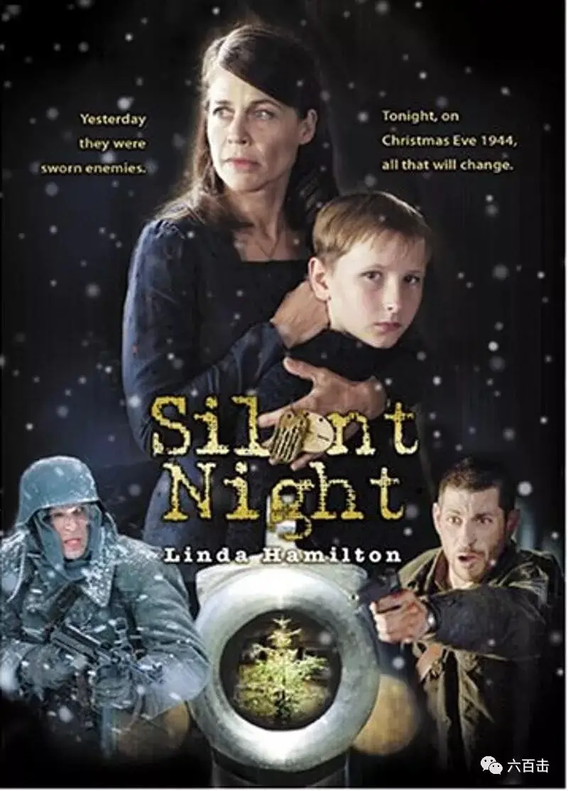
平安夜
Silent Night
导演：德尼·吉本斯
剧情100分钟 / Drama 100 min
豆瓣评分8.5
这是一部小成本诚意之作，故事发生在1944年的德国，基督徒伊丽莎白带着儿子福瑞斯躲在森林木屋之中，以躲避战火带来的伤害。
某日，三名受伤的美国士兵敲响了伊丽莎白家的房门，他们需要一个地方修养疗伤，无奈之下，伊丽莎白只得让他们进屋，但前提条件是他们的武器必须留在屋外。
没过多久，又来了三名不速之客，他们是德国士兵，在小小的木屋之中，互为敌对的两方人马狭路相逢，艰难维系着表面的平和。
圣诞节来临了，众人围坐在餐桌前，共同庆祝这个上帝赐予他们的节日，杯筹交错之间，大家放松了下来，暂且忘记了各自的国籍和立场，气氛开始缓和起来。
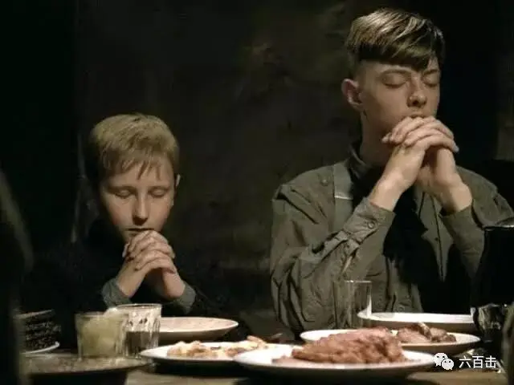
这个发生在小木屋的故事，没有兵戈相见，但却充满了戏剧的张力，观看的观众从开始到结束都害怕那份属于平安夜的喜乐被战争摧毁，因为那实在是太残酷了.......
电影背景音乐是一首圣诗《天使在高天歌唱》，非常好听。
10
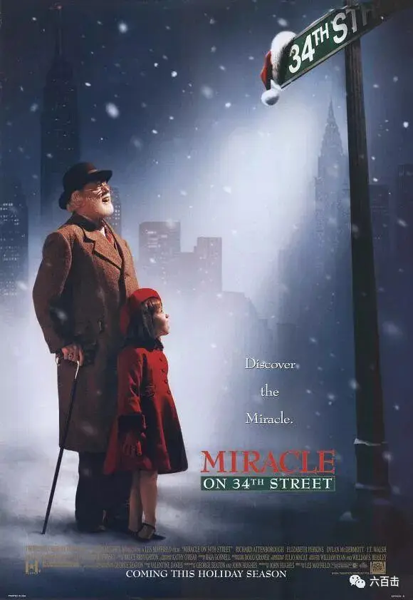
34街的奇迹
Miracle on 34th Street
导演：莱斯·梅菲尔德
剧情114分钟 / Drama 114 min
豆瓣评分7.8
这是一部适合成年人看的圣诞电影，苏珊的妈妈达瑞斯总是很忙，没有时间陪她。即使是在圣诞节，她仍旧在组织欢乐游行的工作。
可是意外发生了，游行队伍中扮演圣诞老人的那位老人竟然在游行前喝醉了，于是达瑞斯就找了一个看上去很和蔼的老人临时替代，可是让她吃惊的是，这位老人竟然在游行结束之后竟然坚持说自己就是圣诞老人。
因为同行竞争对手的嫉妒，这位可爱的圣诞老人惹上了一场官司。
电影中那段法庭戏非常精彩，辩护律师为圣诞老人的辩护更是充满了智慧，表达出本片对于怀疑主义、唯科学主义的批判以及对信仰和人性的肯定。
关注并回复： 圣诞快乐 获取资源大礼包
相关推荐：
《芳华》| 他那么好却被伤的如此之深
袁立，挺住！ | 这是一个无法认错且难有饶恕的世界
南京大屠杀80周年：我们当记住这位拯救25万中国难民的“东方辛德勒”
《至暗时刻》| 永不！永不！永远都不要放弃！
《潜行者》 | 这是全人类绝无仅有的电影了
《乡愁》 | 没有一个人能够将信仰拍的如此诗意和凝重
这里没有挑逗你眼目情欲的小鲜肉
也没有挑动你肉体情欲的段子
更没有膨胀你今生骄傲的鸡血
我们只在乎那些最质朴真诚的作品
在那里我们才能恢复真正的想象力
我们也坚信这才是我们真正需要的

ID:Six_hundred_hits
长按二维码，一键关注
【六百击】
-END-
电影评论
尽情分享朋友圈

苹果打赏通道